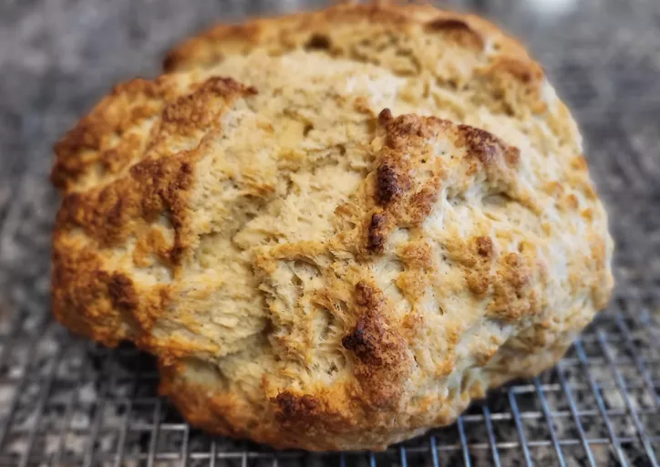

Irish Soda Bread

Description
Irish soda bread is a type of quick bread that relies on baking soda, not yeast, to rise. The bread contains
buttermilk, which contains lactic acid. The acid reacts with the baking soda to create air bubbles, resulting in
a perfectly risen dough.
Soda bread became incredibly common during the Irish Potato Famine, as you can make it with only four
ingredients: flour, salt, an acid, and baking soda.
Ingredients at a glance
These are the basic, easy-to-find ingredients you'll need to make this top-rated Irish soda bread recipe:
- Flour: This classic Irish soda bread starts with all-purpose flour.
- Margarine: Margarine has a higher water content than butter, so the results are often softer. If you want,
you can substitute Irish butter.
- Sugar: Four tablespoons of sugar add the perfect amount of sweetness.
- Leaveners: Baking soda and baking powder act as leaveners, which means they help the bread rise.
- Salt: A pinch of salt enhances the overall flavor of the Irish soda bread.
- Buttermilk: A cup of buttermilk adds flavor and helps the loaf rise even higher.
- Egg: An egg lends richness and flavor. Plus, it helps bind the dough together.
- Butter: Brush the unbaked loaf with a mixture of buttermilk and butter before you bake it for extra flavor
and shine.
Steps at a glance
You'll find the full, step-by-step recipe below — but here's a brief overview of what you can expect when you
make homemade Irish soda bread:
- Combine the first six ingredients in a bowl. Stir in the buttermilk and egg.
- Turn the dough out and knead. Form the dough into a round loaf.
- Brush with butter and buttermilk, then cut an X in the top.
- Bake until a toothpick inserted into the center comes out clean.
Storing conditions
Wrap the cooled Irish soda bread tightly in storage wrap or place it in an airtight container. Store at room
temperature for up to four days.
Can you freeze the Irish Soda Bread?
Wrap the cooled loaf tightly in a layer of storage wrap, then follow it up with a layer of aluminum foil. Freeze
for up to two months. Thaw in the refrigerator overnight.
Ingredients
- 4 cups all-purpose flour
- ½ cup margarine or butter, softened
- 4 tablespoons white sugar
- 1 teaspoon baking soda
- 1 tablespoon baking powder
- ½ teaspoon salt
- 1 cup buttermilk
- 1 large egg
- ¼ cup butter, melted
- ¼ cup buttermilk
Directions
- Preheat the oven to 375 degrees F (190 degrees C). Lightly grease a large baking sheet.
- Mix flour, softened margarine, sugar, baking soda, baking powder, and salt together in a large bowl. Stir in
1 cup of buttermilk and egg. Turn dough out onto a lightly floured surface and knead slightly. Form dough
into a round loaf and place on the prepared baking sheet. Note that the dough will be a little sticky.
- Combine melted butter with 1/4 cup buttermilk in a small bowl; brush loaf with this mixture. Use a sharp
knife to cut an 'X' into the top of the loaf.
- Bake in preheated oven until a toothpick inserted into the center of the loaf comes out clean, 45 to 50
minutes. Check for doneness after 30 minutes. You may continue to brush the loaf with the butter mixture
while it bakes.